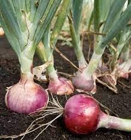

Info Tanaman Banyumanik

Bawang Merah
Kingdom: Plantae
Divisi: Tracheophyta
Class: Liliopsida
Ordo: Asparagales
Famili: Amaryllidaceae
Genus: Allium
Spesies: Allium cepa
🌱 Budidaya
- Lingkungan: Tumbuh baik di dataran rendah hingga 900 mdpl. Membutuhkan tanah gembur yang kaya humus dengan pH 6–7, serta sinar matahari penuh dan drainase yang baik.
- Penanaman: Gunakan umbi bibit sehat (berumur 2–3 bulan). Tanam dengan jarak 15 x 15 cm dan posisikan umbi secara miring, sebagian mencuat ke permukaan.
- Perawatan: Siram pagi dan sore hari saat kondisi tanah kering. Lakukan penyiangan rutin dan pemupukan susulan menggunakan pupuk NPK atau kompos. Waspadai hama seperti ulat grayak dan penyakit busuk daun.
💡 Fun Fact
"Rempah Wajib Masakan Nusantara" — Bawang merah menjadi bumbu dasar utama dalam sebagian besar masakan Indonesia, menjadikannya bahan yang tak tergantikan di dapur.
🍃 Manfaat
- Mengandung senyawa sulfur dan antioksidan yang membantu menurunkan tekanan darah dan meningkatkan sistem kekebalan tubuh.
- Merupakan bumbu utama dalam hampir semua masakan Indonesia, sehingga sangat penting dalam kehidupan sehari-hari.
- Memiliki nilai jual yang stabil dan dapat menjadi sumber penghasilan menjanjikan bagi petani.